| Matrix name | Aligned logos | cor |
Ncor |
logoDP |
NIcor |
NsEucl |
SSD |
NSW |
rcor |
rNcor |
rlogoDP |
rNIcor |
rNsEucl |
rSSD |
rNSW |
rank_mean |
match_rank |
Aligned matrices |
|---|
| positions_7nt_m3_shift3 (positions_7nt_m3) |
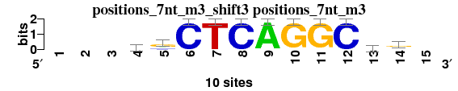 |
|
|
|
|
|
|
|
|
|
|
|
|
|
|
|
|
; positions_7nt_m3; m=0 (reference); ncol1=11; shift=3; ncol=15; ---sgCTCAGGCgr-
; Alignment reference
a 0 0 0 1 2 0 0 0 10 0 0 0 2 3 0
c 0 0 0 4 2 10 0 10 0 0 0 10 2 2 0
g 0 0 0 4 6 0 0 0 0 10 10 0 5 5 0
t 0 0 0 1 0 0 10 0 0 0 0 0 1 0 0
|
| 5875_TFAP2B_DBD_2_HumanTF_1.0__shift2 (5875_TFAP2B_DBD_2_HumanTF_1.0_) |
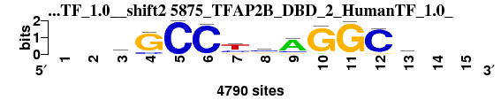 |
0.785 |
0.654 |
7.834 |
0.607 |
0.894 |
2.240 |
0.888 |
6 |
1 |
1 |
1 |
6 |
9 |
9 |
4.714 |
1 |
; positions_7nt_m3 versus 5875_TFAP2B_DBD_2_HumanTF_1.0_; m=1/13; ncol2=11; w=10; offset=-1; strand=D; shift=2; score= 4.7143; --mGCCysAGGCd--
; cor=0.785; Ncor=0.654; logoDP=7.834; NIcor=0.607; NsEucl=0.894; SSD=2.240; NSW=0.888; rcor=6; rNcor=1; rlogoDP=1; rNIcor=1; rNsEucl=6; rSSD=9; rNSW=9; rank_mean=4.714; match_rank=1
a 0 0 1784 36 0 0 16 576 3480 235 6 47 1822 0 0
c 0 0 1412 609 4549 4549 1204 2126 608 4 10 4250 371 0 0
g 0 0 232 3940 4 1 612 1498 446 4549 4549 299 1149 0 0
t 0 0 1121 30 0 158 2716 348 14 2 1 25 1207 0 0
|
| 5902_Tcfap2a_DBD_2_HumanTF_1.0__shift2 (5902_Tcfap2a_DBD_2_HumanTF_1.0_) |
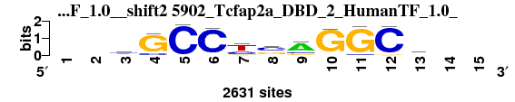 |
0.785 |
0.654 |
7.151 |
0.606 |
0.895 |
2.209 |
0.890 |
7 |
2 |
2 |
2 |
5 |
8 |
8 |
4.857 |
2 |
; positions_7nt_m3 versus 5902_Tcfap2a_DBD_2_HumanTF_1.0_; m=2/13; ncol2=11; w=10; offset=-1; strand=D; shift=2; score= 4.8571; --mGCCysAGGCd--
; cor=0.785; Ncor=0.654; logoDP=7.151; NIcor=0.606; NsEucl=0.895; SSD=2.209; NSW=0.890; rcor=7; rNcor=2; rlogoDP=2; rNIcor=2; rNsEucl=5; rSSD=8; rNSW=8; rank_mean=4.857; match_rank=2
a 0 0 865 0 0 0 0 144 1714 98 0 0 823 0 0
c 0 0 915 347 2439 2439 766 1269 368 94 164 2299 181 0 0
g 0 0 171 2092 88 79 287 909 340 2439 2439 140 616 0 0
t 0 0 488 49 0 96 1387 117 17 0 0 0 820 0 0
|
| 6491_2pe5_C_3D-footprint_20130124__shift4 (6491_2pe5_C_3D-footprint_20130124_) |
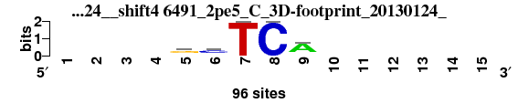 |
0.951 |
0.432 |
4.678 |
0.421 |
0.915 |
0.362 |
0.964 |
1 |
11 |
10 |
9 |
1 |
1 |
1 |
4.857 |
3 |
; positions_7nt_m3 versus 6491_2pe5_C_3D-footprint_20130124_; m=3/13; ncol2=5; w=5; offset=1; strand=D; shift=4; score= 4.8571; ----gcTCA------
; cor=0.951; Ncor=0.432; logoDP=4.678; NIcor=0.421; NsEucl=0.915; SSD=0.362; NSW=0.964; rcor=1; rNcor=11; rlogoDP=10; rNIcor=9; rNsEucl=1; rSSD=1; rNSW=1; rank_mean=4.857; match_rank=3
a 0 0 0 0 16 8 0 0 72 0 0 0 0 0 0
c 0 0 0 0 8 56 0 96 8 0 0 0 0 0 0
g 0 0 0 0 56 16 0 0 8 0 0 0 0 0 0
t 0 0 0 0 16 16 96 0 8 0 0 0 0 0 0
|
| 5872_TFAP2A_DBD_2_HumanTF_1.0__shift2 (5872_TFAP2A_DBD_2_HumanTF_1.0_) |
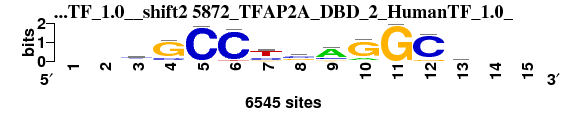 |
0.783 |
0.652 |
6.662 |
0.600 |
0.895 |
2.201 |
0.890 |
8 |
3 |
5 |
3 |
4 |
7 |
7 |
5.286 |
4 |
; positions_7nt_m3 versus 5872_TFAP2A_DBD_2_HumanTF_1.0_; m=4/13; ncol2=11; w=10; offset=-1; strand=D; shift=2; score= 5.2857; --hGCCysAGGCw--
; cor=0.783; Ncor=0.652; logoDP=6.662; NIcor=0.600; NsEucl=0.895; SSD=2.201; NSW=0.890; rcor=8; rNcor=3; rlogoDP=5; rNIcor=3; rNsEucl=4; rSSD=7; rNSW=7; rank_mean=5.286; match_rank=4
a 0 0 1706 137 0 0 33 575 3640 1012 0 31 1865 0 0
c 0 0 1939 968 5309 5309 1646 2682 995 224 31 4726 798 0 0
g 0 0 277 4340 139 11 658 1613 618 5309 5309 582 1295 0 0
t 0 0 1386 47 0 281 2972 438 56 0 0 21 1350 0 0
|
| 7566_PAX5_si_HOCOMOCO_v9__rc_shift4 (7566_PAX5_si_HOCOMOCO_v9__rc) |
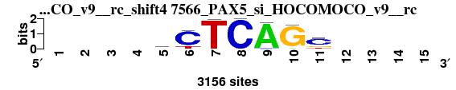 |
0.843 |
0.537 |
6.019 |
0.430 |
0.882 |
1.355 |
0.903 |
3 |
10 |
7 |
8 |
11 |
3 |
3 |
6.429 |
5 |
; positions_7nt_m3 versus 7566_PAX5_si_HOCOMOCO_v9__rc; m=5/13; ncol2=7; w=7; offset=1; strand=R; shift=4; score= 6.4286; ----cCTCAGc----
; cor=0.843; Ncor=0.537; logoDP=6.019; NIcor=0.430; NsEucl=0.882; SSD=1.355; NSW=0.903; rcor=3; rNcor=10; rlogoDP=7; rNIcor=8; rNsEucl=11; rSSD=3; rNSW=3; rank_mean=6.429; match_rank=5
a 0 0 0 0 577 0 0 0 3025 155 0 0 0 0 0
c 0 0 0 0 1369 2524 0 3156 131 21 2012 0 0 0 0
g 0 0 0 0 783 35 13 0 0 2958 632 0 0 0 0
t 0 0 0 0 427 597 3143 0 0 22 512 0 0 0 0
|
| 3725_UP00028_UniPROBE_20120919__rc_shift0 (3725_UP00028_UniPROBE_20120919__rc) |
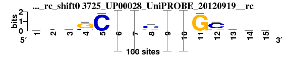 |
0.765 |
0.561 |
6.752 |
0.492 |
0.900 |
2.415 |
0.890 |
10 |
8 |
3 |
7 |
2 |
11 |
5 |
6.571 |
6 |
; positions_7nt_m3 versus 3725_UP00028_UniPROBE_20120919__rc; m=6/13; ncol2=15; w=11; offset=-3; strand=R; shift=0; score= 6.5714; wthSCCysrGGSdww
; cor=0.765; Ncor=0.561; logoDP=6.752; NIcor=0.492; NsEucl=0.900; SSD=2.415; NSW=0.890; rcor=10; rNcor=8; rlogoDP=3; rNIcor=7; rNsEucl=2; rSSD=11; rNSW=5; rank_mean=6.571; match_rank=6
a 28 15 25 1 1 0 0 5 0.59 0.03 1 2 35 33 30
c 24 14 33 27 98 0.96 0.28 55 0.12 0.01 1 70 7 19 16
g 22 15 9 70 1 0.01 0.12 38 0.28 0.96 98 27 29 22 17
t 26 56 33 2 0 0.03 0.59 2 0 0 0 1 29 26 37
|
| 6022_1cjg_A_3D-footprint_20130124__shift4 (6022_1cjg_A_3D-footprint_20130124_) |
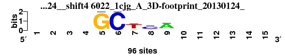 |
0.900 |
0.409 |
3.648 |
0.375 |
0.889 |
0.612 |
0.939 |
2 |
13 |
11 |
11 |
9 |
2 |
2 |
7.143 |
7 |
; positions_7nt_m3 versus 6022_1cjg_A_3D-footprint_20130124_; m=7/13; ncol2=5; w=5; offset=1; strand=D; shift=4; score= 7.1429; ----GCTcA------
; cor=0.900; Ncor=0.409; logoDP=3.648; NIcor=0.375; NsEucl=0.889; SSD=0.612; NSW=0.939; rcor=2; rNcor=13; rlogoDP=11; rNIcor=11; rNsEucl=9; rSSD=2; rNSW=2; rank_mean=7.143; match_rank=7
a 0 0 0 0 0 0 8 10 72 0 0 0 0 0 0
c 0 0 0 0 0 96 8 61 8 0 0 0 0 0 0
g 0 0 0 0 96 0 11 8 8 0 0 0 0 0 0
t 0 0 0 0 0 0 69 17 8 0 0 0 0 0 0
|
| 1944_PB0088.1_JASPAR_CORE_2009__rc_shift0 (1944_PB0088.1_JASPAR_CORE_2009__rc) |
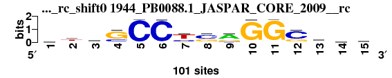 |
0.764 |
0.561 |
6.657 |
0.495 |
0.900 |
2.419 |
0.890 |
11 |
9 |
6 |
6 |
3 |
12 |
6 |
7.571 |
8 |
; positions_7nt_m3 versus 1944_PB0088.1_JASPAR_CORE_2009__rc; m=8/13; ncol2=15; w=11; offset=-3; strand=R; shift=0; score= 7.5714; wtySCCysrGGSdww
; cor=0.764; Ncor=0.561; logoDP=6.657; NIcor=0.495; NsEucl=0.900; SSD=2.419; NSW=0.890; rcor=11; rNcor=9; rlogoDP=6; rNIcor=6; rNsEucl=3; rSSD=12; rNSW=6; rank_mean=7.571; match_rank=8
a 27 15 24 1 1 0 0 5 59 3 1 2 35 33 29
c 24 14 33 27 98 96 28 54 12 1 1 70 7 19 16
g 22 15 9 70 1 1 12 38 28 96 98 27 28 21 17
t 26 56 33 2 1 3 59 2 0 0 1 1 29 26 37
|
| 7295_AP2A_f2_HOCOMOCO_v9__rc_shift3 (7295_AP2A_f2_HOCOMOCO_v9__rc) |
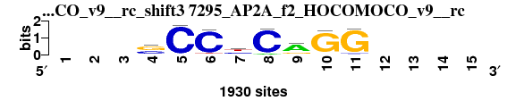 |
0.802 |
0.584 |
2.399 |
-0.007 |
0.884 |
1.718 |
0.893 |
4 |
6 |
13 |
13 |
10 |
5 |
4 |
7.857 |
9 |
; positions_7nt_m3 versus 7295_AP2A_f2_HOCOMOCO_v9__rc; m=9/13; ncol2=8; w=8; offset=0; strand=R; shift=3; score= 7.8571; ---sCCyCaGG----
; cor=0.802; Ncor=0.584; logoDP=2.399; NIcor=-0.007; NsEucl=0.884; SSD=1.718; NSW=0.893; rcor=4; rNcor=6; rlogoDP=13; rNIcor=13; rNsEucl=10; rSSD=5; rNSW=4; rank_mean=7.857; match_rank=9
a 0 0 0 70 4 9 70 187 1276 74 30 0 0 0 0
c 0 0 0 698 1859 1746 742 1742 169 81 97 0 0 0 0
g 0 0 0 1036 29 30 297 0 419 1749 1790 0 0 0 0
t 0 0 0 126 38 145 821 1 66 26 13 0 0 0 0
|
| 5878_TFAP2C_DBD_2_HumanTF_1.0__shift2 (5878_TFAP2C_DBD_2_HumanTF_1.0_) |
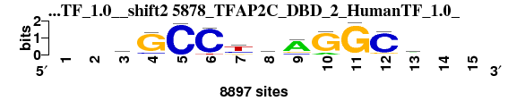 |
0.762 |
0.635 |
6.738 |
0.583 |
0.890 |
2.421 |
0.879 |
12 |
4 |
4 |
4 |
8 |
13 |
12 |
8.143 |
10 |
; positions_7nt_m3 versus 5878_TFAP2C_DBD_2_HumanTF_1.0_; m=10/13; ncol2=11; w=10; offset=-1; strand=D; shift=2; score= 8.1429; --hGCCtsAGGCw--
; cor=0.762; Ncor=0.635; logoDP=6.738; NIcor=0.583; NsEucl=0.890; SSD=2.421; NSW=0.879; rcor=12; rNcor=4; rlogoDP=4; rNIcor=4; rNsEucl=8; rSSD=13; rNSW=12; rank_mean=8.143; match_rank=10
a 0 0 2750 159 0 3 148 1124 5725 1038 0 127 3008 0 0
c 0 0 2292 836 7757 7757 1751 2896 837 85 108 7064 509 0 0
g 0 0 566 6921 148 33 1117 2871 1139 7757 7757 694 1870 0 0
t 0 0 2150 71 0 595 4740 867 56 17 0 97 2370 0 0
|
| 5882_TFAP2C_full_3_HumanTF_1.0__shift2 (5882_TFAP2C_full_3_HumanTF_1.0_) |
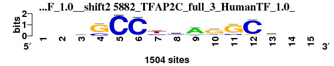 |
0.757 |
0.631 |
5.039 |
0.573 |
0.890 |
2.405 |
0.880 |
13 |
5 |
9 |
5 |
7 |
10 |
11 |
8.571 |
11 |
; positions_7nt_m3 versus 5882_TFAP2C_full_3_HumanTF_1.0_; m=11/13; ncol2=11; w=10; offset=-1; strand=D; shift=2; score= 8.5714; --wGCCysAGGCw--
; cor=0.757; Ncor=0.631; logoDP=5.039; NIcor=0.573; NsEucl=0.890; SSD=2.405; NSW=0.880; rcor=13; rNcor=5; rlogoDP=9; rNIcor=5; rNsEucl=7; rSSD=10; rNSW=11; rank_mean=8.571; match_rank=11
a 0 0 382 0 0 11 44 172 741 106 0 21 398 0 0
c 0 0 245 251 1026 1026 272 446 110 210 220 953 91 0 0
g 0 0 123 775 18 5 131 319 135 1026 1026 73 213 0 0
t 0 0 276 13 0 37 580 89 41 162 69 2 324 0 0
|
| 7297_AP2C_f1_HOCOMOCO_v9__rc_shift3 (7297_AP2C_f1_HOCOMOCO_v9__rc) |
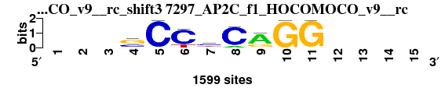 |
0.785 |
0.571 |
2.819 |
-0.001 |
0.879 |
1.877 |
0.883 |
5 |
7 |
12 |
12 |
12 |
6 |
10 |
9.143 |
12 |
; positions_7nt_m3 versus 7297_AP2C_f1_HOCOMOCO_v9__rc; m=12/13; ncol2=8; w=8; offset=0; strand=R; shift=3; score= 9.1429; ---sCCyCAGG----
; cor=0.785; Ncor=0.571; logoDP=2.819; NIcor=-0.001; NsEucl=0.879; SSD=1.877; NSW=0.883; rcor=5; rNcor=7; rlogoDP=12; rNIcor=12; rNsEucl=12; rSSD=6; rNSW=10; rank_mean=9.143; match_rank=12
a 0 0 0 59 2 1 59 170 1166 6 25 0 0 0 0
c 0 0 0 571 1564 1282 629 1416 36 1 1 0 0 0 0
g 0 0 0 893 1 1 330 0 381 1567 1572 0 0 0 0
t 0 0 0 76 32 315 581 13 16 25 1 0 0 0 0
|
| 6517_2wbs_A_3D-footprint_20130124__shift8 (6517_2wbs_A_3D-footprint_20130124_) |
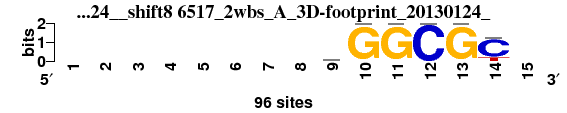 |
0.766 |
0.418 |
5.958 |
0.398 |
0.853 |
1.560 |
0.870 |
9 |
12 |
8 |
10 |
13 |
4 |
13 |
9.857 |
13 |
; positions_7nt_m3 versus 6517_2wbs_A_3D-footprint_20130124_; m=13/13; ncol2=6; w=6; offset=5; strand=D; shift=8; score= 9.8571; --------aGGCGC-
; cor=0.766; Ncor=0.418; logoDP=5.958; NIcor=0.398; NsEucl=0.853; SSD=1.560; NSW=0.870; rcor=9; rNcor=12; rlogoDP=8; rNIcor=10; rNsEucl=13; rSSD=4; rNSW=13; rank_mean=9.857; match_rank=13
a 0 0 0 0 0 0 0 0 38 0 0 0 0 0 0
c 0 0 0 0 0 0 0 0 20 0 0 96 0 76 0
g 0 0 0 0 0 0 0 0 19 96 96 0 96 0 0
t 0 0 0 0 0 0 0 0 19 0 0 0 0 20 0
|
{kind=link}
{kind=link}
{kind=link}
{kind=link}
{kind=link}
{kind=link}
{kind=link}
{kind=link}
{kind=link}
{kind=link}
{kind=link}
{kind=link}
{kind=link}
{kind=link}